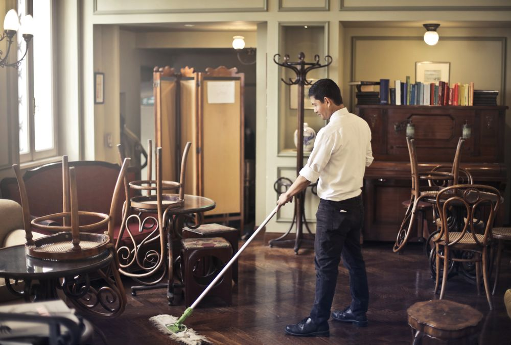

February 28, 2026
Janitorial vs. day porter: what your building needs
We break down janitorial vs. day porter service — and when you might want both.
Read articleBy the Ecco Facilities team · April 5, 2026
High-traffic commercial buildings face a cleaning challenge that traditional after-hours janitorial crews simply cannot solve. Lobbies, restrooms, elevators, and common areas see hundreds or even thousands of people pass through every day. By midmorning, the shine from last night's cleaning has already faded. Trash bins overflow, spills sit untouched, and restrooms run out of supplies hours before anyone is scheduled to restock them.
That is where day porter services make a measurable difference. A day porter is an on-site cleaning professional who works during business hours, maintaining your facility in real time as conditions change throughout the day. For property managers and building owners across New York City, investing in a day porter is one of the most practical decisions they can make to protect their asset and keep occupants satisfied. Here are seven specific benefits that make the case.
In a busy commercial building, accidents are not a matter of if but when. Coffee spills in the lobby, food dropped in a corridor, muddy footprints tracked in from a rainstorm. When these incidents happen during business hours and no one is available to address them, they sit for hours. The mess gets worse as foot traffic spreads it, and the building starts to look neglected.
A day porter eliminates that delay entirely. Because they are on-site and actively monitoring the facility, spills and messes are handled within minutes of occurring. There is no need to call in a crew, submit a maintenance request, or wait until the evening shift arrives. The problem is identified, addressed, and resolved before most people even notice it happened.
This kind of responsiveness is especially critical in properties with polished stone or tile floors, where a liquid spill can become a serious safety hazard within seconds. Having someone ready to act immediately protects both the surface and the people walking on it.
First impressions are formed in seconds, and for commercial properties, those impressions directly affect leasing decisions, client confidence, and tenant retention. A building that looks pristine at 7 a.m. but deteriorates visibly by noon sends a message that management is not paying attention.
Day porters maintain a consistent standard of cleanliness from the moment the building opens until the last tenant leaves. They cycle through common areas, wipe down surfaces, empty trash receptacles, and address wear as it happens. The result is a facility that looks well maintained at 3 p.m. the same way it did at 8 a.m.
This consistency is what separates a well-run building from one that merely gets cleaned. Tenants notice the difference, visitors notice the difference, and prospective clients touring the space absolutely notice the difference. A clean building communicates professionalism, and that standard needs to hold throughout the entire workday, not just at the start of it.
Restrooms in high-traffic buildings take a beating. In a property with several hundred daily occupants, a restroom that was fully stocked and spotless at 8 a.m. can be out of paper towels, low on soap, and visibly dirty by lunchtime. Without someone checking and restocking during the day, these conditions persist for hours and generate complaints fast.
Day porters perform scheduled restroom checks throughout their shift. They restock consumables, wipe down counters and fixtures, mop floors, and ensure that everything remains functional and presentable. This is not a courtesy; it is a baseline expectation in any professionally managed commercial property.
Buildings that rely solely on after-hours commercial cleaning for restroom upkeep are leaving an eight-to-ten-hour gap where no one is maintaining one of the most heavily used and most scrutinized areas of the facility. A day porter closes that gap completely.
Every building has predictable surges. The morning rush, the lunch hour, the post-lunch return, and the end-of-day exit all create concentrated waves of foot traffic that accelerate wear on common areas. Lobbies get dirtier, elevators need attention, and shared kitchens or break rooms become cluttered.
A day porter can adjust their focus to match these patterns. During the lunch rush, they prioritize lobby and elevator maintenance. After peak kitchen use, they cycle through break rooms to reset the space. This adaptive approach means cleaning effort is concentrated where and when it matters most, rather than spread evenly across hours where demand is low.
This flexibility is something that a fixed after-hours cleaning schedule cannot replicate. Traffic patterns change, tenant needs shift, and unexpected events occur. Having someone on-site who can respond to those changes in real time keeps the building running smoothly regardless of what the day brings.
Tenant satisfaction surveys consistently rank cleanliness as one of the top factors influencing lease renewal decisions. When tenants see visible evidence that someone is actively maintaining the building during their working hours, it builds confidence in management and reinforces the value of their lease. It signals that the property owner cares about the day-to-day experience, not just the bottom line.
Visitors and clients form their own impressions as well. A guest walking into a clean, well-maintained lobby with fresh-smelling restrooms and spotless common areas will associate that quality with the businesses operating inside the building. That association matters for every tenant, from law firms to tech startups to medical practices.
The pattern across buildings that add day porter coverage is consistent: complaints drop, satisfaction rises, and tenants begin citing the cleanliness of the building as a reason they stay. For property managers looking at retention strategies, few investments deliver returns this clearly.
Slip-and-fall incidents are among the most common and most expensive liability claims in commercial real estate. A wet floor in a lobby, a spill on a staircase, or an icy patch near an entrance can result in serious injury and significant legal exposure for the building owner. In New York City, where foot traffic is dense and weather conditions can change quickly, these risks are elevated year-round.
A day porter serves as a frontline defense against these hazards. Because they are actively patrolling the building during business hours, they can identify and address dangerous conditions before someone is hurt. They deploy wet floor signs, clean up spills immediately, and monitor entryways during rain and snow to keep floors as dry and safe as possible.
The cost of a single slip-and-fall claim can easily exceed tens of thousands of dollars in medical expenses, legal fees, and settlement costs. Compared to that exposure, the investment in a day porter is minimal. It is a proactive risk management measure that pays for itself many times over by preventing incidents rather than reacting to them after the fact.
Some building managers attempt to address daytime cleanliness by scheduling additional janitorial visits or hiring multiple part-time cleaners to cover different shifts. This approach creates logistical headaches: coordinating schedules, managing multiple vendors, ensuring consistent quality across different teams, and dealing with the inevitable gaps when someone calls out or a shift change does not go smoothly.
A dedicated day porter simplifies all of this. One trained professional, on-site for a full shift, covers everything that happens during business hours. There is no overlap confusion, no scheduling conflicts, and no inconsistency in standards. The porter becomes familiar with your building, your tenants, and your specific needs, which means the quality of service improves over time rather than staying flat.
When you factor in the cost of complaints, tenant turnover, liability claims, and the management overhead of juggling multiple cleaning arrangements, a single day porter is almost always the more economical choice. It consolidates your daytime facility maintenance into one reliable, accountable solution — and it pairs naturally with your recurring commercial cleaning program.
High-traffic buildings need more than after-hours cleaning. They need someone on the ground during business hours, keeping the facility safe, clean, and presentable in real time. Day porter services deliver exactly that, and the benefits extend far beyond aesthetics. From liability reduction to tenant retention to operational efficiency, the impact is measurable and immediate.
At Ecco Facilities, we provide trained day porters to commercial properties across New York City. Our porters are vetted, experienced, and equipped with eco-certified products that meet a high standard for indoor air quality and environmental responsibility. Whether you manage a single building or a portfolio of properties, we can design a day porter program that fits your schedule, your budget, and your tenants' expectations.
Ready to see what a day porter can do for your building? Request a free proposal and we will assess your property, recommend the right coverage level, and get your porter on-site faster than you expect.
Keep reading

February 28, 2026
We break down janitorial vs. day porter service — and when you might want both.
Read articleApril 4, 2026
Daily, weekly, monthly, and quarterly — the tasks that keep a New York City office healthy and productive.
Read articleApril 5, 2026
The eight things worth evaluating before you sign a contract.
Read articleOn-site, in real time
Tell us how your space runs and we'll design day porter coverage scaled to your hours, your traffic, and your budget.